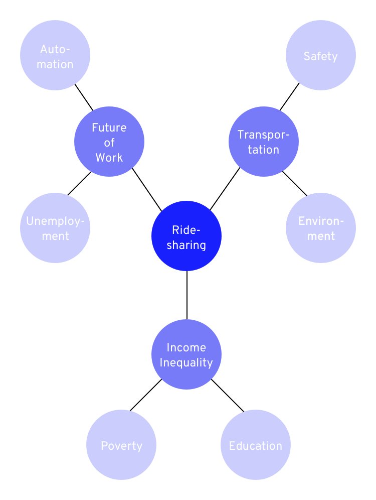
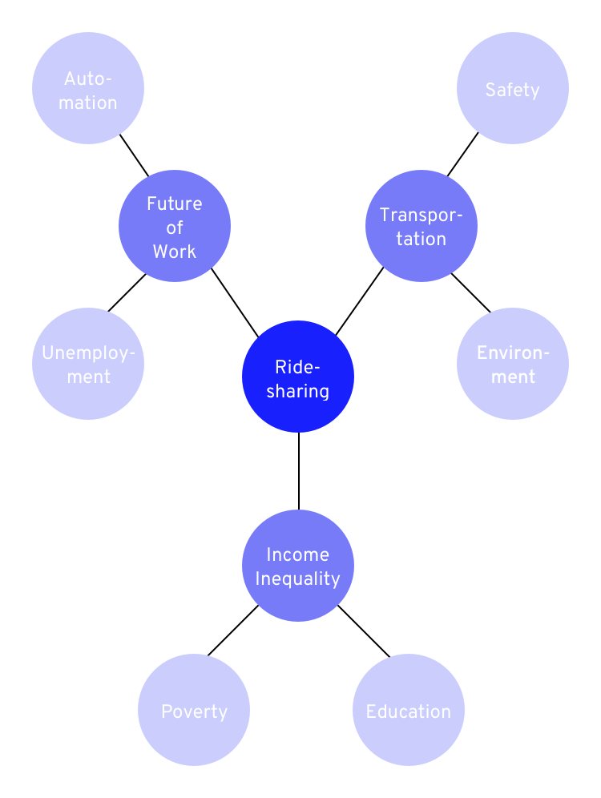

Uber’s intersectionality map reveals the context in which the company operates. For example, the map shows that ride-sharing influences taxi drivers’ livelihoods (“transportation” + “unemployment”). With this knowledge, Uber’s designers can consider adding features to work with taxi drivers, instead of indiscriminately disrupting the industry.